Risk Assessment#
Characteristics of the exercise#
Aim of the exercise:
In this exercise, you will go through the different steps requiring QGIS in order to conduct a spatial risk assessment.
Type of trainings exercise:
This exercise can be used in online and presence training.
It can be done as a follow-along exercise or individually as a self-study.
These skills are relevant for:
Estimated time demand for the exercise:
Relevant Wiki Articles:
Background#
In the context of the Forecast based Financing methodology the conduction of a robust risk assessment is a crucial step towards the development of an Early Action Protocol. A risk analysis serves to understand what kinds of disaster impacts can be expected from a particular type of hazard and to identify who and what is exposed and vulnerable to this hazard and why. By overlaying the information on exposure, vulnerability, and coping capacity, it will become clear which areas are predicted to be most severely impacted. These areas can then be targeted as priority areas for early action to ensure the most at-risk communities receive assistance before the event happens. The collection and processing of this information varies based on the problem, but the calculation scheme to combine the information to a risk score remains consistent.
Somalia is significantly exposed to droughts. We will showcase a risk assessment for a drought Early Action protocol.
Part 1: Indicator Processing#
Task#
The first part of the exercise will prepare the data in order to serve as indicator values. Raw data will be processed into meaningful indicators, and the vulnerability index will be calculated. Finally, all risk relevant data will be joined into a single vector layer using spatial data geoprocessing.
Data#
Download the data folder for “Modul_5_Exercise2_Drought_Monitoring_Trigger.zip” Here. In the folder, you can find two folders. One for the first part (“Modul_5_Ex1_Part_1”) of the exercise and one for the second part (“Modul_5_Ex1_Part_2”).
Open the data folder for the first part of the exercise: “Modul_5_Ex1_Part_1”.
Save the folder on your computer and unzip the file. The zip folder includes:
som_admbnda_adm2_ocha_20230308.shp: Somalia district boundaries (Admin level 2)WHO_health_sites.shp: Healthsites Somaliasom_ppp_2020_UNadj_constrained.tif: Worldpop Population Counts SomaliaSomalia_malnutrion_district_2022_2023.xlsx:Somalia: Acute Malnutrition
Hint
All files still have their original names. However, feel free to modify their names if necessary to identify them more easily.
Load the Somalia district boundaries (admin level 2) (
som_admbnda_adm2_ocha_20230308.shp) and Healthsites Somalia (`WHO_health_sites.shp) into QGIS.Make sure to that both datasets are in the same projection. In this case we have two different projections and we will reproject Healthsites Somalia into EPSG 4326. Use the tool
Reproject layerfor this process. See the Wiki entry on Projections for further information.
Attention
Before you start doing any GIS operations, always explore the data. Always check if the projections of the different layers are the same.
In order to bring the information of the health sites point layer into a usable indicator value we can now count the health sites per district. We can use the tool Count points in polygon from the Processing Toolbox. Take a look on the tools description and the further features it brings. For our task we only have to specify polygon and point input layer, the count field name (e.g. Num_healtsites) and choose name and directory of the output layer. Explore the output.
{kind=link}
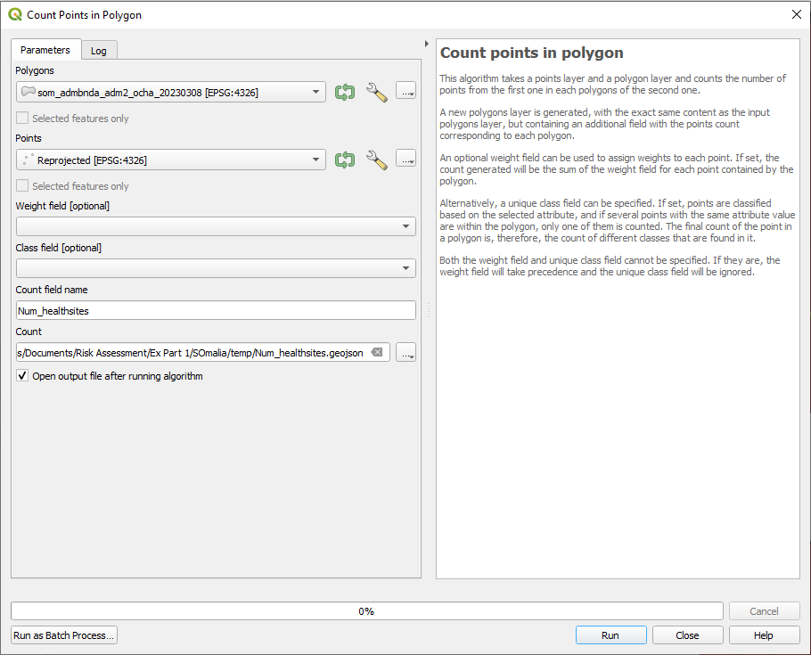
Cont healthsites per district#
Now we have the number of health sites per district. Nevertheless, it would be interesting to know how many health sites exist per 10.000 people. For this task we firstly need to know how many inhabitants has each district. We can process this information by using the Zonal statistics tool from the Processing Toolbox. See the Wiki entry for Zonal Statistics for further information. Specify your inout layer (Output of step 3 e.g. Num_healtsites) and your raster layer (Worldpop Raster), specify the column prefix (e.g. _wpop) and select the statistics to caclulate (sum). For each district all pixel values of the Worldpop Raster that fall inside of it will be summed up. Explore the output.
{kind=link}
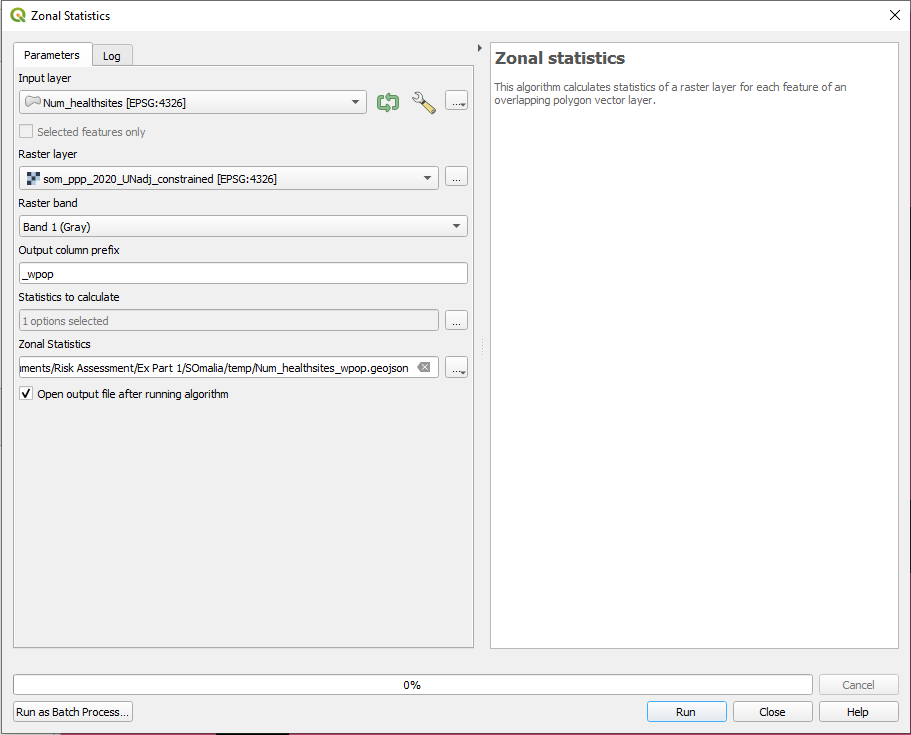
Summarising population counts per district.#
Hint
Throughout the indicator processing process you will have several interim results. Make sure to save them in a “temp” folder.
Now we know the numbers of health sites and the number of population per district. We are ready to calculate our final indicator __Number of health sites per 10.000 inhabitants.
Open the attribute table of “Num_healthsites_wpop” (Output of step 4) and Open the
Field Calculatorby clicking on the button . By checkin the box for
. By checkin the box for Create a new fieldwe can conduct calculation and saving them right away in a new attribute column.define the output field name as “healthsites_10000” and set the
TypetoDecimal Number(real).Now we will calculate in the expression field the number of health sites per 10.000 inhabitants:
("Num_healthsites"/"_wpopsum")*10000
When you are down click
 to save your edits and switch off the editing mode by again clicking on
to save your edits and switch off the editing mode by again clicking on  (Wiki Video).
(Wiki Video).
{kind=link}
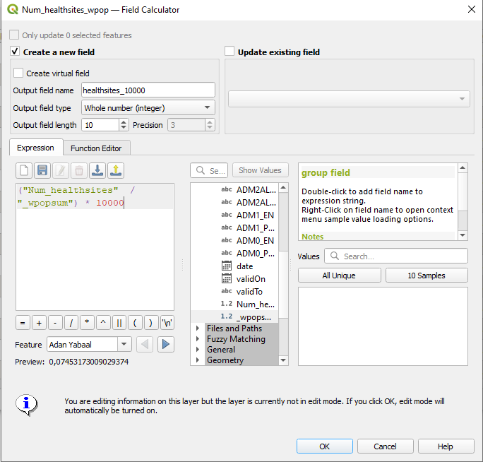
Calculating health sites per 10000 inhabitants.#
Land Degradation#
A very important factor for areas vulnerable to drought is the level of land degradation. It is an important factor not only for agriculture, but also for livestock herds, as both are primary sources of income. We will try to add this information to our dataset:
{kind=link}
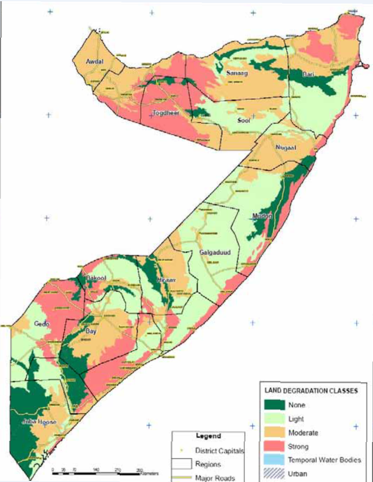
Land Degradation.#
You will see that we can only download the information as an image. This is a very common case when working with open data. We have to digitise the information in order to be able to use it for further processing. Find the digitised version in “Modul_5_Ex1_Part_1\land_degradation_somalia”.
Explore the data. We have a column “LandD_CLas” which indicators the severity of land degradation from 0 to 3. We now want to join each respective land degradation class to its correct district by calculating the largest overlapping area.
Open the tool
Join attributes by locationfrom the Processing Toolbox.define
Input Layer(layer you want to enrich) andJoin Layer(dataset with the additional information)select
intersectsas geometric predicate and add only theLandD_classas field to add to our base layer.as
Join TypesetTake attributes of the feature with largest overlap only (one-to-one).Save as Layer.
See the Wiki entry Spatial Joins for further information.

Joining Attributes by Location.#
Malnutrition#
Another very important indicator to describe vulnerability in a district is acute malnutrition, especially for children under 5 years old.
Download the data we need:
Somalia_malnutrion_district_2022_2023.xlsx:Somalia: Acute Malnutrition
Explore the data. In which resolution is the data available? Do you have ideas as to how we can add it to our indicator dataset?
Save the Excel file as a CSV by clicking on
Save file asand choosingCSV (delimiter-separated).Load the CSV file into you QGIS by drag and drop.
Open the tool
Join attributes by field valuefrom the Processing Toolbox.specify our two datasets we want to join as well as the common field available for joining (
ADM2_ENandadm2name).as
join typesetTake attributes of the first matching feature only (one-to-one).Save the layer to file.

Joining attributes by field value.#
In the Log file you will get a message: “6 feature(s) from input layer could not be matched”.
Attention
It is possible that the CSV file the column headers of the attribute table will not have the correct names (instead they may have “field 1”, “field 2” etc.) after importing. In this case, the correct field names is usually located below the header.
{kind=link}
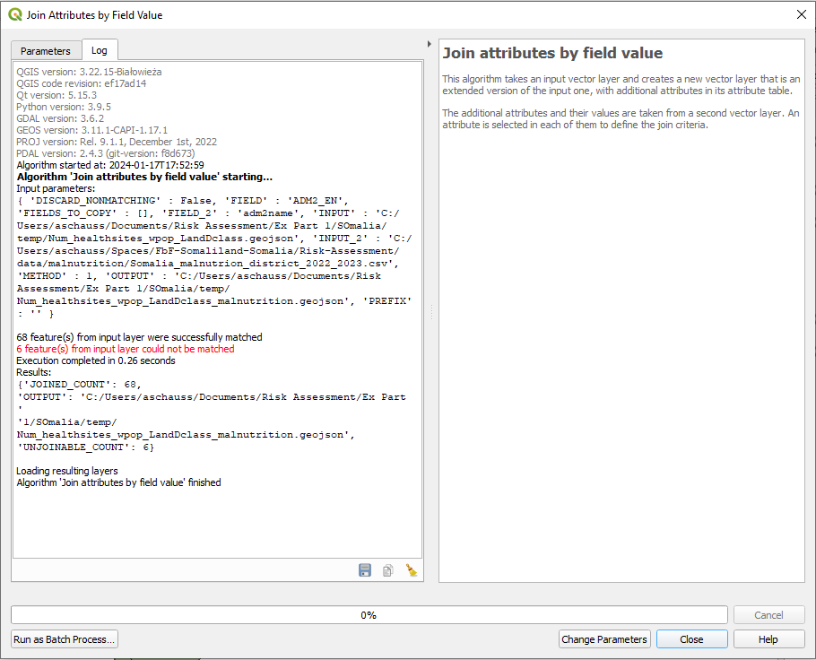
The Log File for the Join Attribute by Field Value algorithm.#
Open the attribute tables from both, your output layer and the CSV file in order to find out the roots of the problem. In the output layer double-click on affunderfive and bring NULL Values to the top. Check the joining attribute “ADM2_EN” and compare it with the joining attribute “adm2name” from the CSV file.
The Spelling of the district names differs. Since we are using the admin-2-boundaries as the base layer for all indicators, we can now adapt the names in the CSV file.
You can edit the names in 6 cases in the Attribute Table of the CSV file by toggling editing mode, or you can manually edit the CSV file in Excel and then load it into QGIS.
Make sure to call your final layer “vulnerability_districts”.
Part 2: Risk Calculation#
Task#
In the second part of the exercise we will showcase the steps how to come from indicators to a risk analysis.
You can find all the data for the second part of the exercise in the “Modul_5_Ex1_Part_2”. Download the data folder for the second part of the exercise: “Modul_5_Ex1_Part_2”. We processed the vulnerability layer in the first part of the exercise; simplified exposure and lack of coping capacity layers have been prepared in advance for this exercise. These layers have only 3 to 4 indicators for complexity reasons. See below an example of indicators that were used for Somalia:
{kind=link}
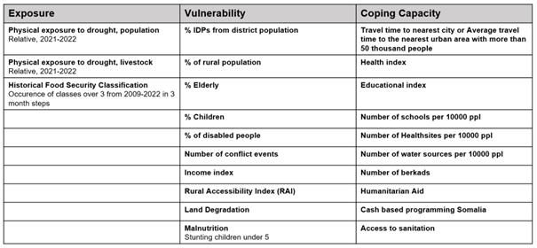
Indicators Risk Assessment#
1. Normalisation#
In order to perform further calculation on the indicators, we need to make them comparable. To do this, we can normalise them to be within a range of 0-1.
\( Normalised\ Value\ = \frac{value\ -\ min value}{max\ value \ - \ min } \)
Open the attribute table of “vulnerability_districts” and Open the
Field Calculatorby clicking on the button. By checkin the box for Create a new fieldwe can conduct calculation and saving them right away in a new attribute column.Start with the first indicator
LandD_class.Define the output field name as “LandD_class_norm” and set the
TypetoDecimal Number(real).Now we will calculate in the expression field the normalisation of the indicator:
("LandD_Clas" - minimum( "LandD_Clas" ))/( maximum( "LandD_Clas") - minimum( "LandD_Clas" ))
When you are done click
to save your edits and switch off the editing mode by clicking on (Wiki Video).

Normalisation of indicators.#
Repeat this step for the other indicators.
For each indicator you have now the original column and the normalised column.
2. Directions#
The direction indicates whether or not an indicator follows the predefined logic: “the higher the value, the worse the circumstances”, meaning that higher values imply a higher risk. The logic is adapted for all three dimensions, since it is generally intuitive to think that high values = high risk. If a respective indicator follows this logic, the direction would be 1; if it does not, the direction would be = -1.
In order to understand the directions of our indicators we first have to assign them to one of the dimensions (exposure, vulnerability, coping capacity).
To which dimension would you assign the processed indicators and what would their direction be?
Depending on the direction the next step will vary:
If the direction is 1 (indicating a positive weight), the formula is straightforward:
\( weighted= value \times weight \)
If the direction is -1 (indicating a negative weight), the formula adjusts the value by subtracting it from 1 before applying the weight:
\( weighted= (1 - value) \times weight \)
The second formula inverts the value \((1 - value)\) before applying the weight, resulting in a different calculation for variables with negative weights.
We will not go further into this in this module but you can find more information here.
Hint
It is recommended to properly check the logic of each indicator. Often the indicators of a certain dimension follow the same logic but there are always exceptions. After the directions have been applied to the data, we can using the language “lack of coping capacity” instead of “coping capacity” since we have forced the respective indicators to another direction following the predefined logic (the higher the value = the worse the circumstances).
3. Weighting of Indicators#
In the next step we can weight the indicators based on their relevance to our risk assessment. It is recommended to do surveys or workshops with the local staff in oder to find out the importance of the respective indicators.
We have used so far the following weighting scale:
Weight |
Definition |
|---|---|
0 |
Not Important |
0.25 |
Slightly Important |
0.5 |
Moderately Important |
0.75 |
Fairly Important |
1 |
Very Important |
In the attribute table of your layer we can calculate the weighted indicators for each normalised indicator. For this we have to follow the same steps as above: Open the
Field Calculatorby clicking on the button, and create a new field with the suffix “_weighted” in the expression field.
"LandD_clas_norm" * 0.75
{kind=link}
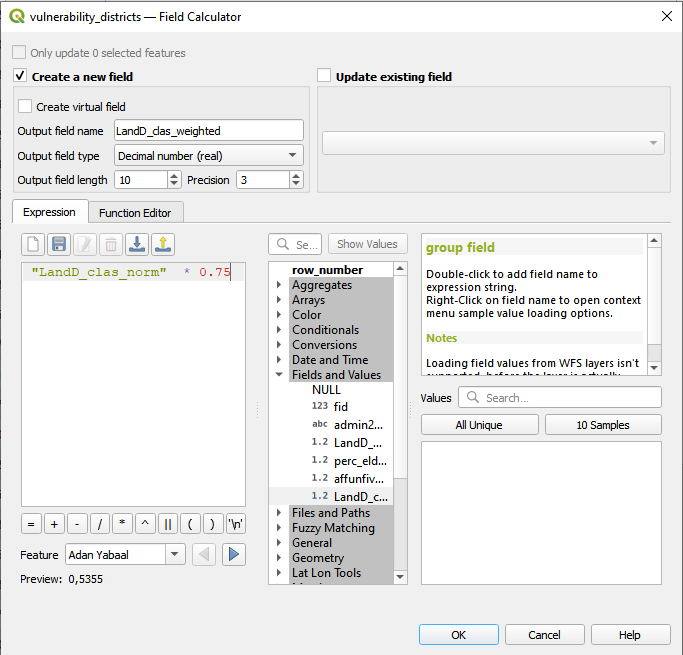
Adding new field to weight indicators.#
For each indicator we now have the normalised and weighted version:
{kind=link}
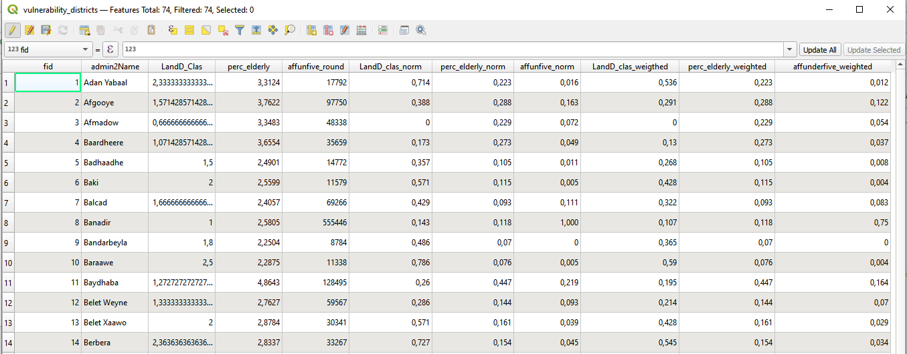
Attribute Table with “_norm” and “_weighted” indicators.#
4. Vulnerability Score / Index#
We are now ready to calculate the vulnerability score for each district:
Open the attribute table -> open the
Field Calculator and create a new field with the name “vulnerability_score” and field type “Decimal Number (real)”. In the expression window, sum up all weighted indicator values:
("LandD_clas_weigthed" + "perc_elderly_weighted" + "affunderfive_weighted") / 3
5. Prepare Risk Assessment#
In order to calculate the risk we have to bring our 3 dimension exposure, vulnerability and coping capacity together.
Right click om one of the layer and select
Properties-> Go theJoinstab.Click on the
+button, add a new join and select the layer you want to join. Define “admin2Name” asJoin Field:

Joining Layers by Join Field.#
Right click on the layer ->
Export->Save feature asand save the layer as “risk” layer into your temp folder.We will now work with the “risk” layer: Delete all fields but the normalised scores: Open the Attribute Table of your risk layer
Toggle editing mode -> Delete field and select all the indicator fields. In the end your layer look should like this:
and select all the indicator fields. In the end your layer look should like this:
{kind=link}
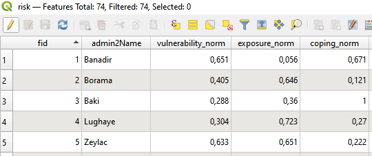
Risk Layer Attribute Table normalised Scores.#
6. Risk Calculation#
Finally, the risk is calculated by the geometric mean of the dimensions Exposure and Susceptibility, while Susceptibility is defined by the geometric mean of Vulnerability and the Lack of Coping Capacity. The geometric mean is chosen since it offers the advantage of rewarding balanced developments and equal reduction of deficits at all levels of the model:
\( susceptibility = \sqrt vulnerability \times lack\ of\ coping\ capacity \)
\( risk= \sqrt exposure \times susceptibility \)
Open the Attribute table ->
Field Calculator and create a field “Susceptibility” and type in the formula. Do the same to create a field called “risk” and employ the appropriate expression.
sqrt("Susceptibility" * "exposure_norm")
{kind=link}
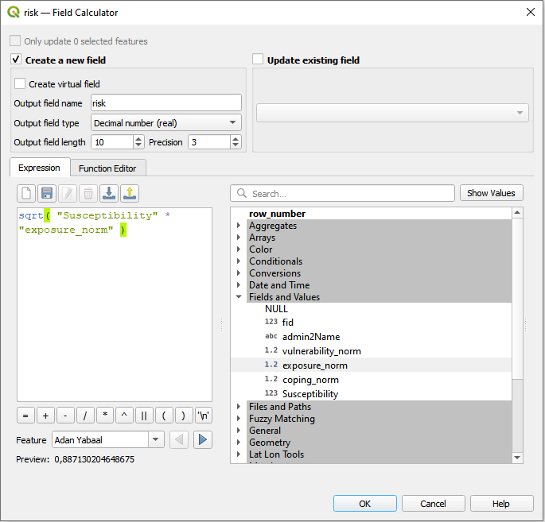
Risk Calculation#
Note
The geometric mean is a specific type of average that is calculated by multiplying together all the values in a dataset and then taking the nth root of the product, where n is the number of values. For two values, the geometric mean is the square root of their product. For three values, it is the cube root, and so on.
6. Visualisation of the Results#
Right click on the “risk” layer ->
Properties->Symbology.In the down left corner click on
Style->Load Style.In the new window click on the three points
 . Navigate to the “Map Template” folder and select the file “somalia_risk_assessment_style.qml”.
. Navigate to the “Map Template” folder and select the file “somalia_risk_assessment_style.qml”.Click
Open. Then click onLoad Style.Back in the “Layer Properties” Window click
ApplyandOK.
Print Layout:
Open a new print layout by clicking on
Project->New Print Layout-> enter the name of your current Project e.g “2024_01”.Go the the
Ex_Part_2folder and drag and drop the filemaps_somalia_template_risk_assessment.qptin the print layout.Change the date to the current date by clicking on “Further map info…” in the items panel. Click on the
Item Propertiestab and scroll down. Here you can change the date in theMain Propertiesfield.If necessary, adjust the legend by clicking on the legend in the
Item Propertiestab and scroll down until you see theLegend itemsfield. If it is not there check if you have to open the dropdown. Make sureAuto updateis not checked.Remove all items in the legend be clicking on the item and then on the red minus icon below.
{kind=link}
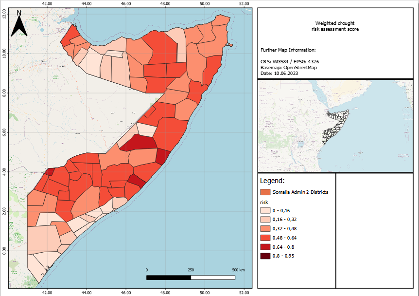
Possible Map Result.#
7. Automating the Process#
HeiGIT has developed a a QGIS Risk Assessment Plugin in order to simplify this process and safe time. You can find more information about the risk methodology and the usage of the plugin here.
In order to try out the plugin and see the result, use the provided input data in your folder: “Modul_5_Ex1_Part_2\Input data\QGIS Plugin Risk Assessment\input”